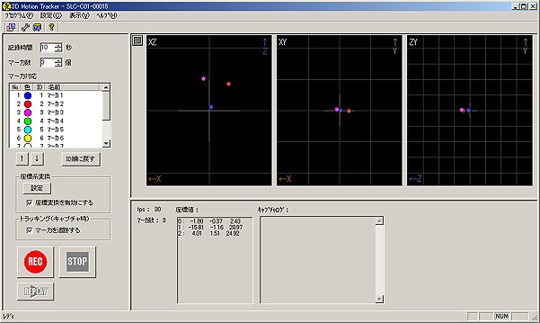
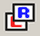
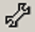
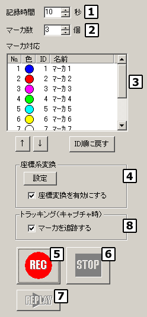
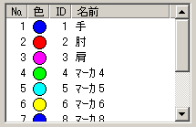
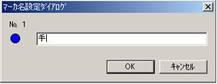
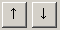
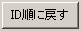
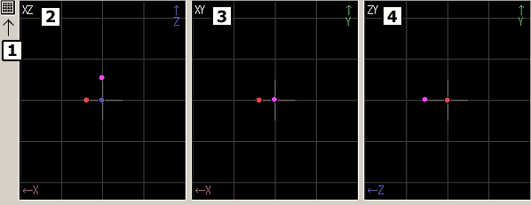

| メイン画面 |
|
全体イメージ

|
メニュー
|
|
プログラム
キャプチャ開始 キャプチャを開始します。設定フォームのRECボタンを押した場合と同じ動作をします。 キャプチャ終了 キャプチャを開始します。設定フォームのSTOPボタンを押した場合と同じ動作をします。 再生 直前にキャプチャした内容を再生します。 アプリケーションの終了 アプリケーションを終了します。
設定
３Ｄ表示設定 キャプチャを開始します。設定フォームのRECボタンを押した場合と同じ動作をします。 座標系変換設定 キャプチャを開始します。設定フォームのSTOPボタンを押した場合と同じ動作をします。 設定フォームに移動 アプリケーションを終了します。 カメラ設定 ステレオラベリングカメラのカメラ設定ダイアログが開きます。 ビデオ出力設定 ステレオラベリングカメラのビデオ出力設定ダイアログが開きます。
表示
２Ｄイメージダイアログ ステレオラベリングカメラで取得したラベリングイメージを出力する２Ｄイメージダイアログの表示、非表示。 ツールバー ツールバーの表示、非表示。 ステータスバー ステータスバーの表示、非表示。
ヘルプ
目次 ヘルプファイル（ＨＴＭＬ）の表示。 バージョン情報の表示。
|
ツールバー
|
|
 ２Ｄイメージダイアログ ステレオラベリングカメラで取得したラベリングイメージを出力する２Ｄイメージダイアログの表示、非表示。  カメラ設定 ステレオラベリングカメラのカメラ設定ダイアログが開きます。 ビデオ出力設定 ステレオラベリングカメラのビデオ出力設定ダイアログが開きます。 3DMotionTracker のバージョン情報 バージョン情報の表示。
|
設定フォーム
|
|

キャプチャ実行前の設定や、キャプチャ開始、中止の操作を行います。
秒単位で記録時間を設定します。１～１００秒の範囲で設定可能です。
キャプチャするマーカの個数を設定します。１～１０個の範囲で設定可能です。
表にはマーカの色、ＩＤ、名前、順番が表示されます。

順番を任意に設定できます。 ２） ３） ３Ｄモニターに表示されるマーカ色に対応。ユーザによる変更はできません。 ユーザによる変更はできません。 任意に名称を設定できます。 １）
- 名前を変更する行（マーカ）をダブルクリックしてください。
- マーカ名設定ダイアログが表示されます。名前を変更してＯＫボタンを押してください。

- 順番を変更する行（マーカ）を選択してください。
- ボタンで順番を上下に変更してください。
- ここで設定する順番はファイル出力に反映されます。
- 元の順（ＩＤ順）に戻す場合はボタンを押してください。
「設定」ボタンを押すと座標系変換手法選択ダイアログが表示されます。
「座標変換を有効にする」チェックボックスのチェックを付けると上記で設定した座標系に変換されます。チェックをはずすとカメラから見た視点での座標系となります。
詳細は座標系変換を参照してください。
「REC」ボタンを押すとキャプチャを開始します。
キャプチャ中の時に「STOP」ボタンを押すとキャプチャを中止します。
直前にキャプチャした内容を再生します。詳細はキャプチャしたモーションデータの再生を参照してください。
「マーカを追跡する」チェックボックスをチェック
キャプチャ時にマーカのトラッキング（追跡）を行います。マーカ設置部位（手、肘、肩…etc.）を識別してキャプチャを行いたい場合にはトラッキングが必要です。ただし、マーカが隠れたり、重なったりした場合にはキャプチャは中止されます。
「マーカを追跡する」チェックボックスをチェックしない
キャプチャ時にマーカのトラッキングを行いません。マーカ設置部位を識別せずにキャプチャしますのでマーカ№（ＩＤ）はカメラの都合で入れ替わることがあります。ただし、マーカが隠れたり、重なったりした場合でもキャプチャは中止されません。
後で、設置部位の認識処理を行う場合に適しています。
|
３Ｄモニターフォーム
|
|

３次元化されたマーカの位置をリアタイムに表示しています。
マーカの表示形態は、カメラが認識した順番に下記の色および形状を採用します。
白い十字は原点（0,0,0）を表します。
３Ｄ表示設定ダイアログを表示します。
ＸＺ座標系のみの表示を行います。上または下から見たイメージです。
ＸＹ座標系のみの表示を行います。前からまたは後ろから見たイメージです。
ＺＹ座標系のみの表示を行います。左または右から見たイメージです。
|
インフォメーションフォーム
|
|
現在の状況を文字で知らせます。
秒間のフレーム数を表示します。
３０未満の状態が続く場合は、他に起動しているアプリケーションの負荷が大きすぎる可能性があります。該当するアプリケーションを終了してください。
現在認識しているマーカの個数を表示します。
現在認識しているマーカの座標値を表示します。
マーカIDと対応するXYZ座標値をマーカの個数分だけ表示します。単位はmm（ミリメートル）です。
モーションキャプチャのログを表示します。
実行した時刻（時分秒）と実行した内容、エラーメッセージ、保存したファイルのパスなどを表示します。
|
|
Copyright (C) 2001 CyVerse
Corp.
|